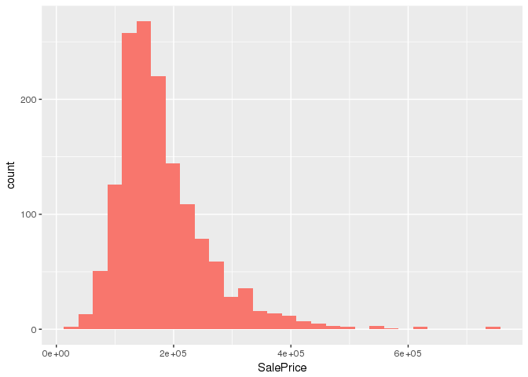
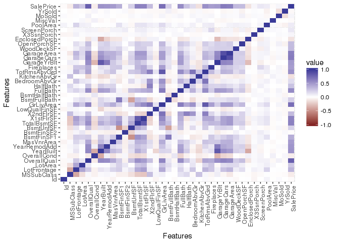

House prices: data exploration Supporting tagline
Overview
In this post I will be doing simple exploratory data analysis of the Ames Housing dataset used in the Kaggle competition House Prices: Advanced Regression Techniques. This is my first blog post here so it’s also an exercise in creating blog posts!
Aims
The problem is to try to correctly predict the house prices in the test dataset by training a regression model on the training data. The dataset to be submitted to Kaggle will have the following form:
| Id | SalePrice |
|---|---|
| 1461 | 169277.1 |
| 1462 | 187758.4 |
| 1463 | 183583.7 |
| 1464 | 179317.5 |
| 1465 | 150730.1 |
| 1466 | 177151.0 |
Analysis
Here I will provide a simple exploratory analysis of the training data. In subsequent posts, I will go into developing the model.
Columns
Here are the columns available in the dataset:
names(train)
## [1] "Id" "MSSubClass" "MSZoning" "LotFrontage"
## [5] "LotArea" "Street" "Alley" "LotShape"
## [9] "LandContour" "Utilities" "LotConfig" "LandSlope"
## [13] "Neighborhood" "Condition1" "Condition2" "BldgType"
## [17] "HouseStyle" "OverallQual" "OverallCond" "YearBuilt"
## [21] "YearRemodAdd" "RoofStyle" "RoofMatl" "Exterior1st"
## [25] "Exterior2nd" "MasVnrType" "MasVnrArea" "ExterQual"
## [29] "ExterCond" "Foundation" "BsmtQual" "BsmtCond"
## [33] "BsmtExposure" "BsmtFinType1" "BsmtFinSF1" "BsmtFinType2"
## [37] "BsmtFinSF2" "BsmtUnfSF" "TotalBsmtSF" "Heating"
## [41] "HeatingQC" "CentralAir" "Electrical" "X1stFlrSF"
## [45] "X2ndFlrSF" "LowQualFinSF" "GrLivArea" "BsmtFullBath"
## [49] "BsmtHalfBath" "FullBath" "HalfBath" "BedroomAbvGr"
## [53] "KitchenAbvGr" "KitchenQual" "TotRmsAbvGrd" "Functional"
## [57] "Fireplaces" "FireplaceQu" "GarageType" "GarageYrBlt"
## [61] "GarageFinish" "GarageCars" "GarageArea" "GarageQual"
## [65] "GarageCond" "PavedDrive" "WoodDeckSF" "OpenPorchSF"
## [69] "EnclosedPorch" "X3SsnPorch" "ScreenPorch" "PoolArea"
## [73] "PoolQC" "Fence" "MiscFeature" "MiscVal"
## [77] "MoSold" "YrSold" "SaleType" "SaleCondition"
## [81] "SalePrice"
The last column “SalePrice” is the one we will be measuring. There are 80 other features that we should try to make use of to predict SalePrice.
Distribution of house prices
First things first, let’s look at how the house prices are distributed.
sp <- train %>% select(SalePrice)
ggplot(sp, aes(SalePrice, fill='1')) + geom_histogram() + guides(fill=FALSE)
## `stat_bin()` using `bins = 30`. Pick better value with `binwidth`.

We can see that the distribution is not normal. It has a positive skew.
sp %>% summarise(Skewness = skewness(SalePrice), Kurtosis = kurtosis(SalePrice))
## Skewness Kurtosis
## 1 1.880941 9.509812
Feature correlation
corrdata <- train %>% select(which(sapply(.,is.numeric)))
qplot(x=Var1, y=Var2, data=melt(cor(corrdata, use="p")), fill=value, geom="tile") +
scale_fill_gradient2(limits=c(-1, 1)) +
theme(axis.text.x = element_text(angle = 90, hjust = 1)) +
labs(x = 'Features', y = 'Features')

blog comments powered by Disqus